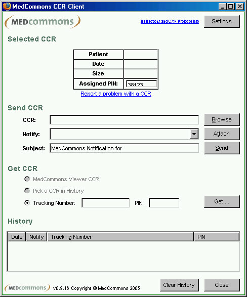
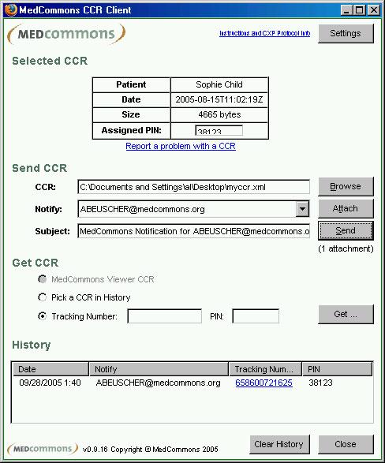

v 1.22
MedCommons CXP/CCR Client Demo Instructions 9/27/05
WARNING:
INSECURE PUBLIC DEMO. DO NOT USE ANY IDENTIFIABLE PATIENT INFORMATION!
Contents:
CXP Protocol
CXP is an example of point-to-point CCR transport between EHR systems. MedCommons has placed CXP into the public domain in order to stimulate comment from EHR vendors and other interested parties.
The CXP protocols are demonstrated by a Firefox extension (PC/Mac) that makes it convenient to cross firewalls separating EHR applications by using a Web accessible CXP server as intermediary. You are free to install your own CXP server from the public domain distribution.
MedCommons operates an enhanced CXP server (https://gateway001.medcommons.net/router/CxpServlet) that anyone can use. This server will send a MedCommons email notification based on emails found in the TO and FROM actors of a CCR. MedCommons tracks this email activity. We hope you will use the MedCommons server as much as possible - it's free - please send feedback to cmo@medcommons.net or to the CCR Accelerator Group.
This note, and the public domain CXP software it refers to is located at http://www.medcommons.net/cxp/
The documentation for the CXP protocol is at http://www.medcommons.net/cxp/collateral/cxp_protocol_specification.pdf
CCR Client
Figure 1
The CCR Client demonstrates EHR to Web and direct EHR to EHR transport using the CXP Protocol. A CCR saved from an EHR is picked up by the local CCR Client, transported by MedCommons using CXP and becomes available to any other EHR user that has a CCR Client installed.
MedCommons, acting as the intermediary transport agent, facilitates interoperability testing by adding:
- an email notification feature based on Actors in the CCR itself,
- an online CCR viewer, and
- a central problem blog to facilitate community-based resolution of incompatibilities and other interoperability problems.
The CCR Client is just an interoperability testing tool. It is assumed that all CCRs are completely anonymous and created explicitly to demonstrate the implementation of various features of the ASTM CCR standard by participating EHR vendors.
CCR Client Installation
- Install Firefox and the CCR Client Firefox Extension
- Download and install Firefox (FF go to www.mozilla.org to get a copy). Please ensure your Firefox is at version 1.0.6 or later.
- Download the most recent version of the CCR Client , from the link on the MedCommons home page to your hard drive. (http://www.medcommons.net/ccr_client/1.21/mccxp_0.9.21.xpi)
- Exit Firefox and double-click the extension file. It will open with Firefox. Click the Install button when it appears
- Note: you must have "allow websites to install plug-ins" checked in your preferences
- After installation, be sure to restart Firefox completely - all windows must be closed for the extension to install properly.
- When installation is successful and the client is installed, an option labelled "CCR Client" will appear in the Tools menu as pictured below:
-

Figure 2
- Prepare a CCR with Embedded Email Address(es) (optional)
- If your CCR Client Settings are utilizing a MedCommons CXP Server, a notification email can be sent to the TO Actors in the CCR when your CCR is processed. If you are using the barebones CXP public domain software, the contents of the CCR will be ignored. A supported MedCommons CXP server is preset in the CCR Client extension. You may change it at will, but note that Notification, Validation and Security features may not be supported by different CXP server implementations.
- Create or open a CCR in your EHR. CCR samples are in http://www.medcommons.net/cxp/collateral/.
- If possible, enter a notification email address for MedCommons to use directly into your EHR software, otherwise you will have an opportunity to enter a notification address in Step 3.
- Save the file as myccr.xml (or another name if you like) on your local file system.
- Run CCR Client to Send CCR
- Open FF if not already open, go to Tools>CCR Client (Fig 2, above) it will look similar to Fig. 1.
- Browse to the file myccr.xml wherever it is stored in local file system. Patient name, CCR Date and size information will be presented for validation. (Fig 3, top).
- Enter the email address of the party you would like MedCommons to Notify, and click Send. The CCR Client will add or change the email address of the TO Actor accordingly. You may change the Assigned PIN to one your destination user already knows and you can even add the PIN and a brief message to the Notification Subject box. If this was real patient data, you should not be so careless with the PIN and the system may issue a warning.
- When accepted, note that a Transaction ID and the PIN are added to your History list for future reference. (Fig 3, bottom)
-

Figure 3
- View the CCR via MedCommons
- Double click the entry in History to preview how others will see the CCR online.
- Anyone can view the CCR you sent by clicking on the Tracking Number link in the Notification email sent by MedCommons, by manually entering the Tracking Number at the MedCommons Home Page, and, if anyone posts it, by using "Report a problem with CCR" in the CCR Client, by clicking in the community blog at https://ops.medcommons.net/cxpblog.php
- They will need to get the PIN from you by some means and enter it when challenged to prove that they are your intended recipient.
- Get the CCR into Destination EHR
- If the destination EHR has not natively implemented CXP, the receiving user may install Firefox and the CCR Client as in step 1, above.
- While viewing the CCR on line, click the Get. button (Fig 3- middle) this will avoid having to reenter the PIN.
- If you are not viewing the CCR on line, enter Tracking ID and PIN and click Get. If you are the original sender, just select the CCR in History and Get.
- Enter a somename.xml and click Save to your local drive
- Open somename.xml in the destination EHR
- Report Problems
- The "Report a Problem with a CCR" link on the CCR Client will add the Tracking ID and PIN along with your free text comment to a running blog that is accessible to all.
- Do not post a CCR or a report to this blog that has any personally identifiable information - you would be sharing it with the world.
- You may review the blog at https://secure.medcommons.net/cxpblog.php
Please send feedback and comments to cmo@medcommons.net
Thank you!